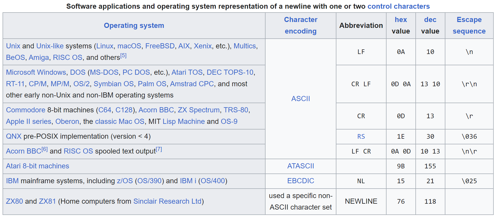
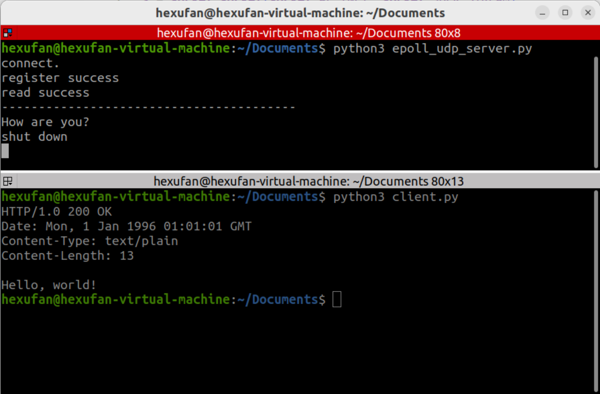

我们已经了解过利用select()实现异步非阻塞通信，该实现方式有如下缺陷。
- 执行
select()过程中需要对监视套接字不停轮询。 - 调用
select()时需要向其传递监视套接字信息。
后者带来的开销是巨大的，因为文件描述符是由OS管理的。这意味着我们的进程需要向操作系统传递数据。这一缺陷可以这样改进：
仅向OS传递一次监视套接字信息，此后仅在发生变化时通知OS。
Linux通过Epoll支持这样的操作，Windows则为IOCP。接下来我们讲解Python中epoll的函数接口与实现方法。
Epoll实现
为了在Python中使用Epoll, 我们需要导入库select。epoll就在其中。
1 | import select |
我们首先创建服务器端套接字, 设置其端口SO_REUSEADDR. 当socket关闭后，本地端用于该socket的端口号立刻就可以被重用。通常来说，只有经过系统定义一段时间后，才能被重用.
1 | serversocket = socket.socket(socket.AF_INET, socket.SOCK_STREAM) |
请注意第5行，我们需要手动将套接字设置为非阻塞模式。
使用epoll的程序通常会执行以下步骤：
创建一个epoll对象
1
epoll = select.epoll()
令epoll对象监听指定sockets上的指定事件
1
epoll.register(serversocket.fileno(), select.EPOLLIN)
epoll.register()的第二个参数指定需要监听的事件，EPOLLIN意为需要读取数据。更多事件请见docs.python.org 。查询发生指定事件的套接字
1
events = epoll.poll(1)
此处参数指监视等待时间，此时为1. 返回值
events为(fileno, eventmask)元组.处理事件
此处与
select()较相似.1
2
3
4
5
6
7
8
9for fileno, event in events:
if fileno == serversocket.fileno():# 服务器套接字有新的数据读取，即需建立连接
pass
elif event & select.EPOLLIN:# 客户端套接字需要读取数据
pass
elif event & select.EPOLLOUT:# 客户端套接字需要向外传输数据
pass
elif event & select.EPOLLHUP:# 客户端套接字断开连接
pass接下来逐个讲解事件处理.
- 新的客户端请求连接
1
2
3
4
5connection, address = serversocket.accept()
# 将新的socket设为非阻塞
connection.setblocking(0)
# 注册读取数据事件（EPOLLIN）
epoll.register(connection.fileno(), select.EPOLLIN)- 读取客户端信息
这里我们需要根据文件描述符
fileno确定socket对象后才能读取，因此需要提前将二者的映射关系存储起来。1
connections = {}
同时在新的客户端请求连接时添加如下代码.
1
connections[connection.fileno()] = connection
初次之外我们读取信息，需要为每个套接字初始化缓存空间.
1
requests = {}
同时在新的客户端请求连接时添加如下代码. 此处
b''中的前缀b意味着此处常量为bytes类型而非str.1
requests[connection.fileno()] = b''
而后在此处添加接受信息代码
1
requests[fileno] += connections[fileno].recv(1024)
同时需要注意, 一旦读取结束我们还需要将此读取事件改为相应的发送信息事件.
1
2
3if EOL1 in requests[fileno] or EOL2 in requests[fileno]:
epoll.modify(fileno, select.EPOLLOUT)
print('-' * 40 + '\n' + requests[fileno].decode()[:-2])这里的
EOL1与EOL2定义如下. 同时还添加了测试代码.1
2EOL1 = b'\n\n'
EOL2 = b'\n\r\n'对该定义如有困惑, 可参考Wikipedia Newline 词条, 截图如下.

- 发送信息给客户端
我们同样需要将每个套接字发送的消息单独存储.
1
responses = {}
此处仅作实验要求，我们将发送给所有客户端套接字的信息均设置为
response.1
2
3response = b'HTTP/1.0 200 OK\r\nDate: Mon, 1 Jan 1996 01:01:01 GMT\r\n'
response += b'Content-Type: text/plain\r\nContent-Length: 13\r\n\r\n'
response += b'Hello, world!'在每个客户端连接时为其创建返回消息.
1
responses[connection.fileno()] = response
而后在此处发送信息并断开连接. 请注意此处
byteswritten为业已发送的字节数目.1
2
3
4
5byteswritten = connections[fileno].send(responses[fileno])
responses[fileno] = responses[fileno][byteswritten:]
if len(responses[fileno]) == 0:
epoll.modify(fileno, 0)
connections[fileno].shutdown(socket.SHUT_RDWR)- 客户端断开连接
取消注册, 并关闭套接字.
1
2
3epoll.unregister(fileno)
connections[fileno].close()
del connections[fileno]循环上述操作4.
销毁epoll对象
1 | epoll.unregister(serversocket.fileno()) |
代码测试

代码如下.
- client.py
1 | import socket |
- server_epoll.py
1 | import socket |
撰写过程中重点参考了How To Use Linux epoll with Python 。